9 FAIRification
Your training website is set up, and your first training instance is ready. As a final step, the SciLifeLab Training Hub encourages you to make your training FAIR: Findable, Accessible, Interoperable and Reusable. This means that others can easily find your training, open its materials in any software, and reuse and cite it.
The template does most of the FAIRification for you. To complete it, fill in a few more fields in your .yml data files. We also recommend publishing your training on Zenodo.
In this chapter, you will learn:
- What FAIR training is, and how it can benefit you as a trainer.
- How the template automatically FAIRifies your training.
- What you can do to complete FAIRification.
Before you start
Where
On two branches: the branch of your training instance, for example release-2706, and main. Need to change branch? See Switch branch.
Publishing on Zenodo starts from the branch of your training instance, and also takes place on GitHub and on zenodo.org.
How
Start the preview, make your changes, and commit and push them, as described in Regular workflow. You can commit several changes together.
9.1 What is FAIR and why should I care?
The FAIR principles were first written for research data, but they apply just as well to training materials. You put a lot of work into your training. FAIR makes sure that work can be found, used and credited, including by people outside your own team, and long after the training has been given.
In practice, FAIR training materials are:
- Findable: people looking for a training on your topic can find yours, for example in a search engine or a training registry.
- Accessible: anyone can open the materials, without having to ask you for them.
- Interoperable: your materials are in open formats, such as Markdown and HTML, that anyone can work with, without paying for special software.
- Reusable: others know what they’re allowed to do with your materials, how to credit you, and how to teach the training themselves.
9.2 FAIRification: the automated part
The template is designed to do most of the FAIRification for you, so that you can focus on the content of your training. It uses the training information you entered in your data files to generate CITATION.cff, .zenodo.json, parts of README.md and the Bioschemas markup. The table shows, for each part of FAIR, what the template does and which information it uses. The collapsible box below the table tells you more about the generated files, and the role each one plays.
| FAIR | What the template does | Information comes from |
|---|---|---|
| Findable | Adds Bioschemas markup to your website, so search engines and training registries such as ELIXIR TeSS can find your training. | data/course.yml, such as the title, description and keywords. |
| Accessible | Publishes your website and repository openly on GitHub. | No extra information needed. |
| Interoperable | Publishes your materials in open formats (Markdown and HTML). | Your materials, as .qmd files in content/. |
| Reusable | Shows the licence on every page, creates CITATION.cff and .zenodo.json with the authors and their ORCIDs, and includes instructor notes. |
The licence in data/course.yml, the authors and ORCIDs in data/team.yml, and the instructor notes in instructors/. |
Every time the website is built, the template updates the generated files from your data files. They give websites and tools, such as GitHub, Zenodo and training registries, the information about your training in a fixed, standard format. Each one plays a different role in FAIRification:
| File | What it’s for |
|---|---|
CITATION.cff |
How to cite your training. GitHub shows it as a Cite this repository button, and reference managers such as Zotero can read it. |
.zenodo.json |
The title, authors, licence, keywords and funding, for Zenodo. |
The generated parts of README.md |
The training information, contributors, citation and licence. |
| Bioschemas markup, hidden in the landing page and the training instance overview page | Lets training registries such as ELIXIR TeSS find your training. |
Don’t edit these by hand: your changes are overwritten the next time the website is built. Change the data files instead.
9.3 FAIRification: your part
There are two main steps you can take to make sure your training is fully FAIR:
- filling in your data files carefully and keeping them up to date
- publishing your training on Zenodo, so that it gets a persistent identifier (DOI), is easy to find and is archived for the long term.
This chapter goes through these steps one by one.
Fill in the data files carefully
The generated files take their information from your data files (see FAIRification: the automated part), so it’s important to fill these in and keep them up to date. You probably filled in most of the FAIR information already, when you set up your training. To complete FAIRification, check these fields on main, and on the branch of your training instance:
| Information | Where | Good to know |
|---|---|---|
| Licence | licence and licence_url under reuse in data/course.yml |
Says how others may reuse your materials. The template uses CC BY 4.0. If you choose another licence, also replace the text in LICENSE.md |
| Authors | data/team.yml |
Everyone in the team is an author in the citation and on Zenodo. To leave someone out, add citation_author: false to their entry: they are still shown on the website |
| ORCIDs | orcid for each person in data/team.yml |
An ORCID is a personal identifier for researchers, so their work is always credited to the right person. Write it like "https://orcid.org/0000-0002-1825-0097" |
| Keywords | keywords in data/course.yml |
Help people find your training on Zenodo and in training registries |
| Organisers and funding | organizers and funding in data/course.yml |
Credit the organisations behind the training, and the grants that paid for it |
Publish on Zenodo
Zenodo is a free, open repository for research outputs, such as papers, datasets, software and training materials. It is run by CERN, and it keeps what you upload available for the long term.
Publishing your training on Zenodo is worth the few extra steps:
- Your training becomes citable. It gets a DOI: a permanent link that others can use to cite your training, just like a research paper. The link keeps working even if your website or repository moves.
- You get credit for your teaching. A training with a DOI is a research output you can list on your CV and add to your ORCID profile. All authors are named, with their ORCIDs.
- You can show its impact. Zenodo shows how often your training has been viewed and downloaded, which is useful for reports and funding applications.
- Every training instance is kept. Each release becomes a new version, so you build up a record of every time the training was given, and what it contained.
- It stays available. Even if you leave your job, or the repository is deleted, the archived copy on Zenodo remains.
You don’t have to upload anything to Zenodo yourself: you can simply connect Zenodo to GitHub, so you publish your training from there. Each time a training instance is ready, with all its materials and information in place, you make a release on GitHub. A release is a snapshot of your repository at that moment. Zenodo then copies it automatically, and gives it a DOI. The template has already prepared the information Zenodo needs, such as the title and authors, from your data files.
Publishing your training on Zenodo takes five steps:
- Log in to Zenodo.
- Turn Zenodo on for your GitHub repository. You only do this once.
- Create a release on GitHub.
- Check your release on Zenodo
- Add the DOIs to your data files.
1. Log in to Zenodo
To publish on Zenodo, you need a Zenodo account that is linked to your GitHub account.
Log in as you normally do, and link your GitHub account to your Zenodo account instead. This way, you don’t end up with a second Zenodo account.
Click your name at the top right.
Click Linked accounts.
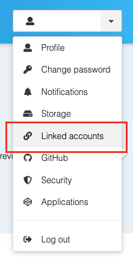
Click Connect next to GitHub.
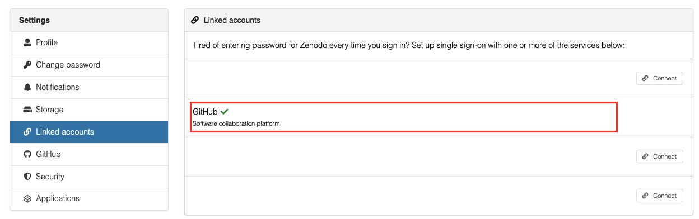
Go to zenodo.org and click Log in.
Choose Log in with GitHub, and click Authorize when GitHub asks whether Zenodo may access your account.
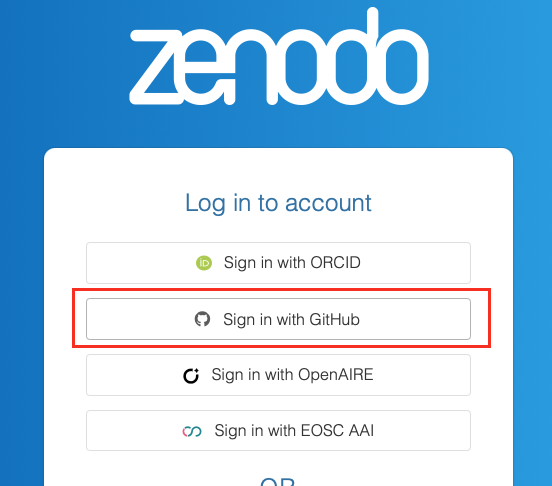
The first time, Zenodo asks for your name and email address. If it sends you an email, click the link in it to confirm your address.
2. Turn on Zenodo for your repository
Next, you connect your GitHub training repository to Zenodo. From then on, Zenodo archives every new release of your repository, and gives it a DOI.
If your repository doesn’t belong to your personal GitHub account, but to an organisation, such as SciLifeLab-Training or NBISweden, the organisation first has to give Zenodo access to its repositories.
You can see whether your repository belongs to an organisation in its URL: in github.com/SciLifeLab-Training/introduction-to-r, the organisation is SciLifeLab-Training. If the first part is your own GitHub username, the repository is yours, and you can skip this box.
What you do:
To check whether Zenodo has access to your organisation’s repositories, log in to GitHub. Click your profile picture at the top right, then Settings.
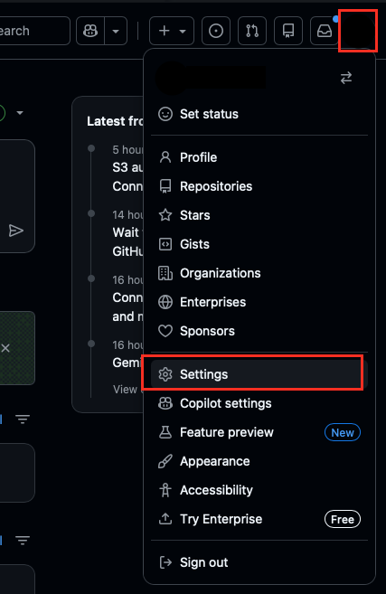
In the sidebar on the left, under Integrations, click Applications, and then the tab Authorized OAuth Apps.
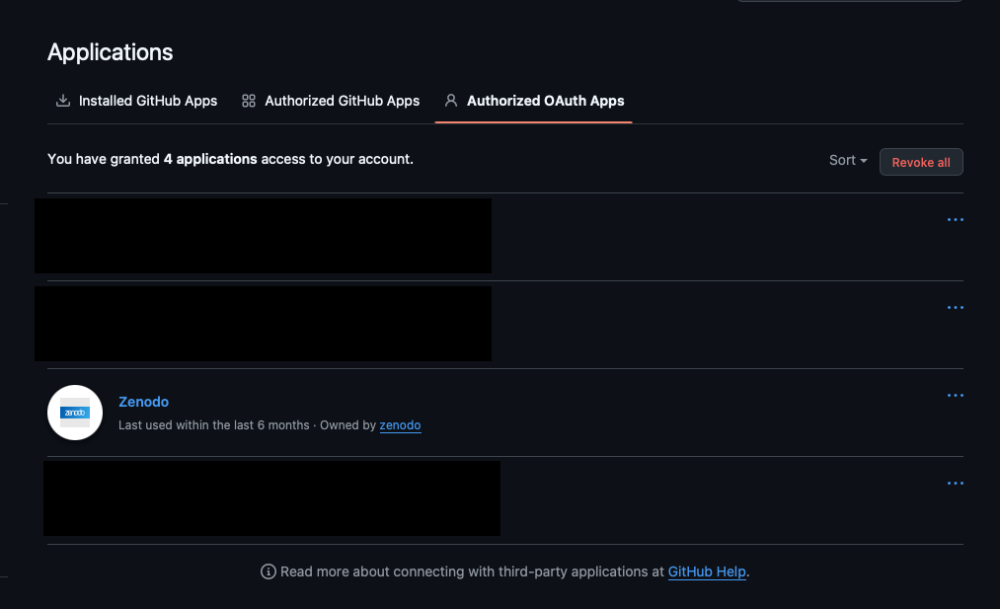
Click Zenodo. Under Organization access, find your organisation:
- A green check means Zenodo already has access. You’re done.
- Request means it doesn’t have access yet. Click it, so that the owners of the organisation get an access request.
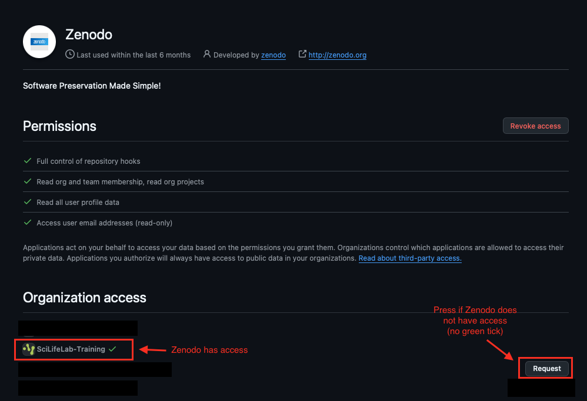
What the owner of your organisation does:
The GitHub organisation owner(s) has to approve the request. To find out who the owners are, go to the organisation’s page on GitHub, click People, and look for Owner next to the names. Ask one of them to:
- Go to the organisation’s Settings → Third-party access → OAuth app policy.
- Find Zenodo in the list of requests, and click Review, then Grant access.
You only need to do this once per organisation. After that, every repository in the organisation can be connected to Zenodo.
On Zenodo, click your name at the top right, then GitHub.
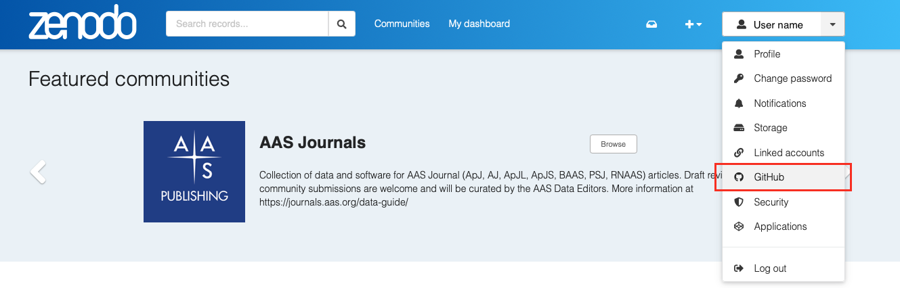
Click Sync now, and then reload the page. Zenodo only shows the repositories it knew about the last time it synced, and the list doesn’t update by itself.
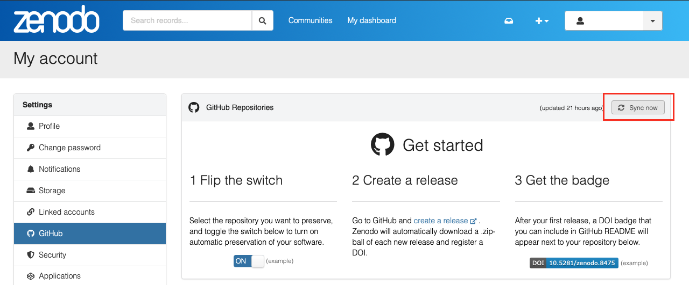
Find your repository in the list, and click its switch to turn it On.
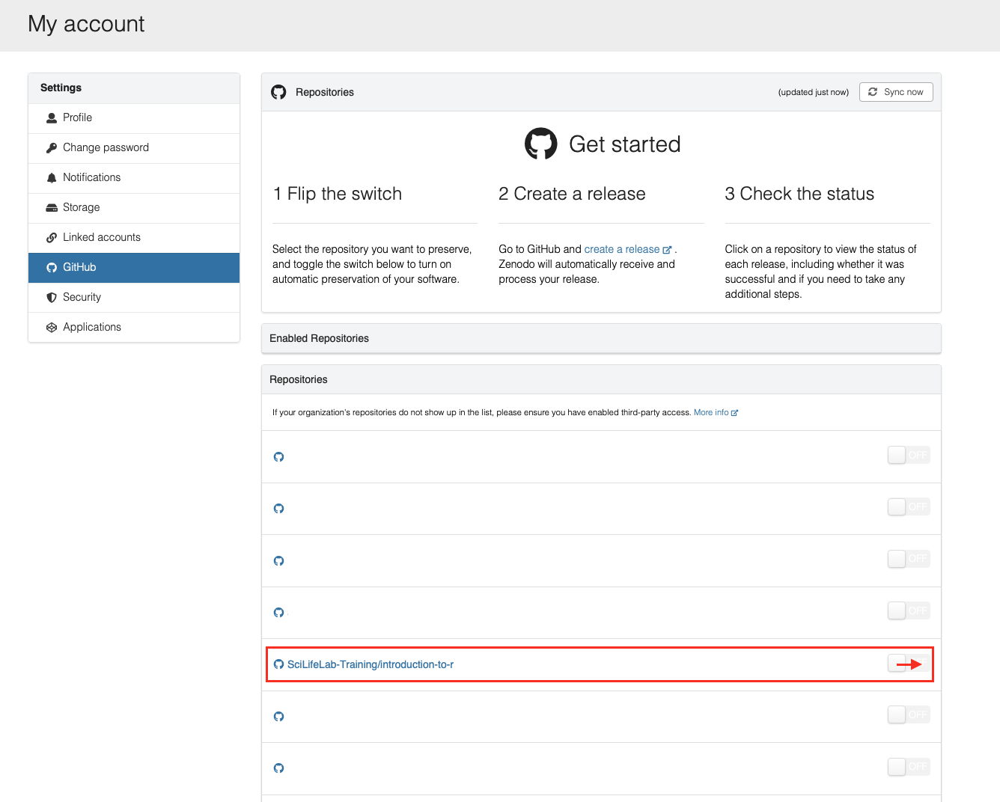
A green banner appears, saying Repository synced successfully. Please reload the page. Reload the page. Your repository is now listed under Enabled Repositories.
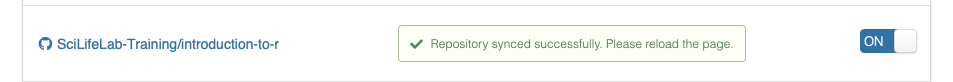
- Is the repository public? Zenodo can’t archive private repositories. You can check this on GitHub, under Settings → General, at the very bottom.
- Do you have admin rights on the repository? Zenodo needs admin rights to connect to it. If the switch doesn’t turn on, ask an owner of the organisation to give you the admin role on the repository.
- Did you sync and reload? Click Sync now again, wait a moment, and reload the page.
3. Create a release on GitHub
A release is a snapshot of your GitHub training repository at a certain moment, with a name and a version number. As soon as you publish a release, Zenodo archives that snapshot and gives it a DOI.
- Your data files are complete, especially the authors and their ORCIDs. Zenodo copies this information when you publish, and you can’t change it automatically afterwards.
- Two fields under
reuseindata/course.ymlon the branch of your training instance are empty:version_doi: ""andrelease_date: "". Zenodo hasn’t created the DOI for this release yet, so any DOI there would belong to an earlier release, see New training instances. - Your latest changes are pushed to the branch of your training instance, and the website has finished building. On GitHub, you can see this under Actions: the last run has a green check.
Go to your repository on GitHub. In the sidebar on the right, under Releases, click Create a new release.
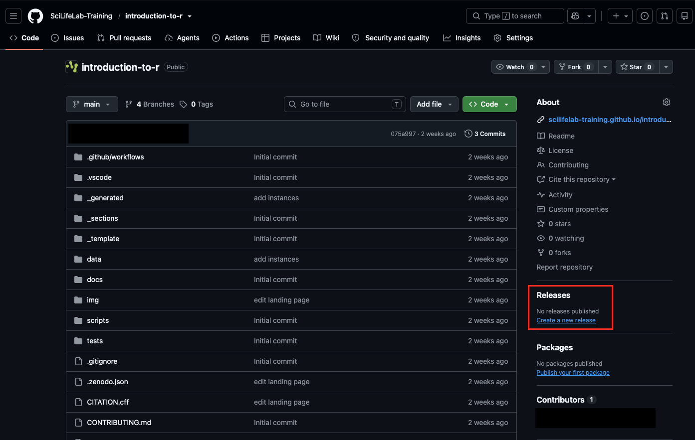
Choose the branch of your training instance. Click Target, and choose the branch, for example release-2706. Zenodo archives the repository as it is on this branch.
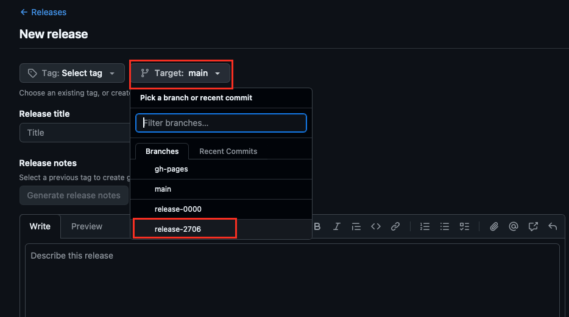
Give the release a tag. Click Choose a tag, type a new tag, for example
v2706.1, and click Create new tag. The tag is the version number of your release: Zenodo shows it as the version of your training.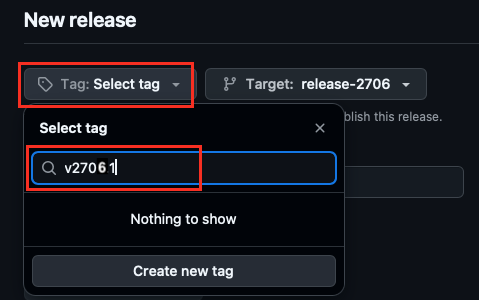
TipWhich tag should I use?Use a tag that shows which training instance the release belongs to, and which version of that instance it is. For example,
v2706.1is the first release of the training instance of June 2027. If you later fix something in the materials of that instance, the next release isv2706.2. The first release of the next training instance could then bev2711.1.A tag can’t have the same name as a branch, so don’t use
release-2706as a tag.Fill in a Release title, for example
Introduction to R, June 2027. In the description, you can write a few sentences about this release, such as what’s in it, or what’s new.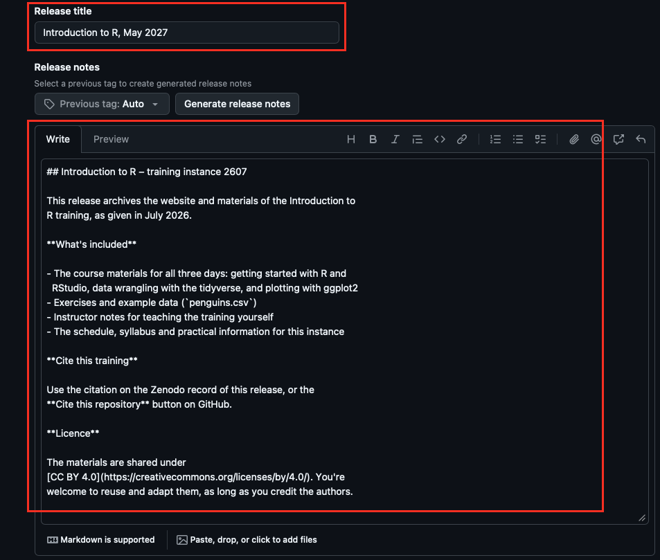
Click Publish release. GitHub now opens the page of your new release. It shows your release notes and, under Assets, a zip file of your repository as it is on the branch of your training instance.
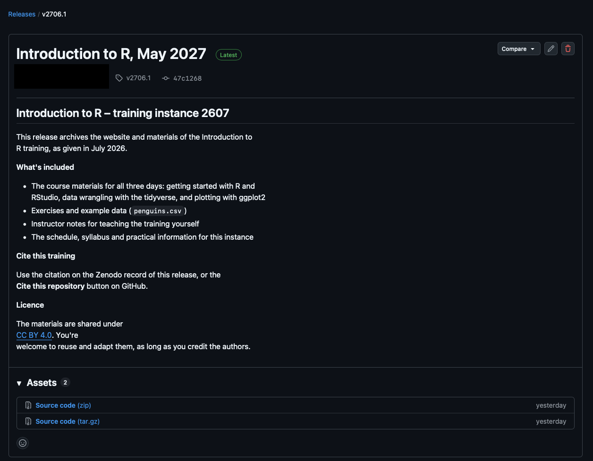
On the main page of your repository, the release is now shown under Releases, in the sidebar on the right.
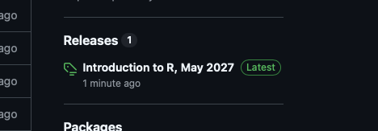
4. Check your release on Zenodo
As soon as you publish a release on GitHub, Zenodo gets a message about it. Within a few minutes, Zenodo archives the release, creates a record for it, and gives it a DOI. You don’t need to do anything for this, but it’s good to check that everything went well, and that the information on Zenodo is right.
On Zenodo, click your name at the top right, then GitHub. Your repository, listed under Enabled Repositories, now has a blue DOI badge next to it. If you don’t see the badge yet, wait a few minutes and reload the page.
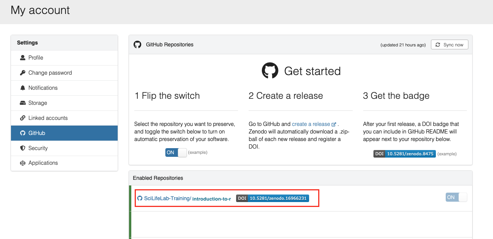
Click the name of your repository. You see a list of all its releases, with the status of each one. Published means that Zenodo archived the release, and that it has a DOI.
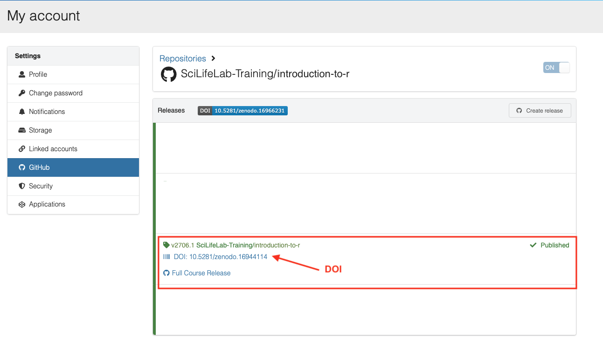
Click the DOI of the release. This opens the full Zenodo record of your release. On the left, you see the title, authors and description of your training, and all the files in your repository. On the right, you see how many people have viewed and downloaded your record, the earlier versions, the licence and how to cite it. Check that the title, authors, ORCIDs, licence and keywords are right.
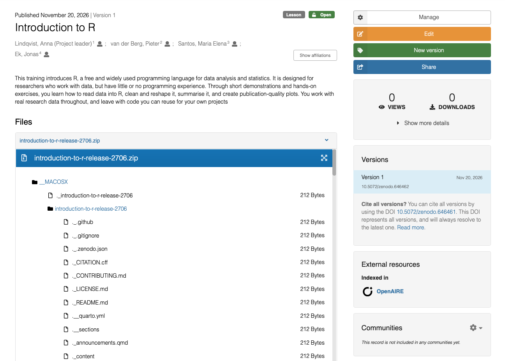
- The release doesn’t show up at all. Zenodo only archives releases that you publish after turning Zenodo on for your repository. Check that your repository is under Enabled Repositories, and publish a new release.
- The status is Failed, or shows an error. Click the release to see the error message. Often, a field in
.zenodo.jsonis missing or not filled in correctly. Fix it in your data files, push your changes, wait until the website has finished building, and publish a new release. - Something in the record is wrong, such as a missing ORCID or a typo in a name. On the record, click Edit, correct the information, and click Publish. This changes the information only: the archived files and the DOI stay the same. Also correct it in your data files, so the next release is right too.
5. Add the DOIs to your data files
Finally, you add the DOIs that Zenodo gave your training to your data files. The template then puts them in the citation, the README and on your website, so that everyone who wants to cite your training uses the DOI.
On the Zenodo record of your release, find the two DOIs of your training in the Versions box on the right:
- The DOI of this version is shown below the version you just released, which is highlighted in the list. It belongs to this one release only.
- The DOI of all versions is under Cite all versions?. It stays the same for every release of your repository, and always leads to the latest version.
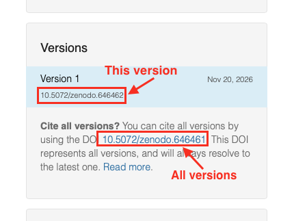
On the branch of your training instance, open
data/course.yml. Underreuse, fill in the two DOIs and the date of the release. Write the DOIs exactly as Zenodo shows them, and the date as YYYY-MM-DD. You find the date at the top of the Zenodo record, after Published.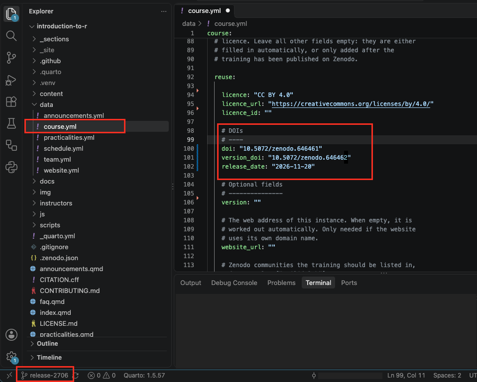
Leave the other fields under
reuseas they are. Save and commit your changes.Switch to the main branch. In
data/course.yml, add the DOI of all versions and the release date. Save and commit your changes.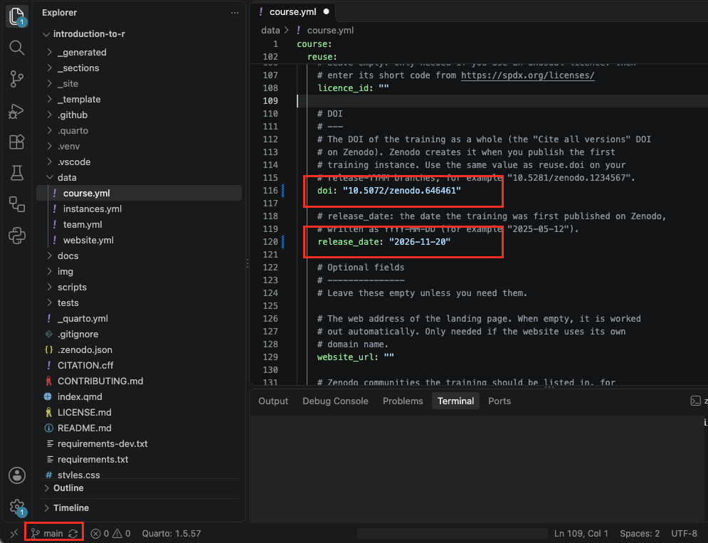
Push your changes on both branches. When the website has finished building, the DOI shows up in
CITATION.cff, in the README and on your website.
Zenodo only creates the DOI after you publish the release. So the release that Zenodo archived can’t contain its own DOI yet. That’s normal, and nothing to worry about: the Zenodo record itself shows the DOI, and your repository and website show it from now on.
9.4 New training instances
When you give your training again, you create a new training instance, as described in Training instances. Each training instance that you release through GitHub becomes a new version of your training on Zenodo, with its own DOI.
Your training then has two kinds of DOI:
- The DOI of all versions stays the same for every training instance. It always leads to the latest one.
- The DOI of this version is different for each training instance.
For example, Introduction to R is given in June and again in November:
In data/course.yml, under reuse |
June: release-2706 | November: release-2711 |
|---|---|---|
doi: the DOI of all versions |
10.5281/zenodo.1111111 |
10.5281/zenodo.1111111, the same |
version_doi: the DOI of this version |
10.5281/zenodo.2222222 |
First empty, then 10.5281/zenodo.3333333 |
release_date |
2027-06-01 |
First empty, then 2027-11-15 |
Making a new training instance is like making a new document by copying last year’s and updating it: everything from the old one comes along, including its DOIs. So for the November training instance:
- You copy the June branch to make release-2711. The new branch now has June’s DOI of this version and release date.
- You empty
version_doiandrelease_date, because they belong to June. Keepdoi. - You publish the November training instance on Zenodo, which gives it its own DOI.
- You fill in that new DOI and the release date.
Empty the DOIs of the earlier instance
Once you’ve made the branch of your new training instance, as described in Training instances, it still has the DOIs of the instance you copied. Empty them before you make a release of your new instance:
Switch to the branch of your new training instance, for example release-2711.
In
data/course.yml, underreuse:- Keep
doi, the DOI of all versions. - Empty
version_doiandrelease_date, so they look like this:version_doi: ""andrelease_date: "". - Empty
versiontoo, if you filled it in for the earlier instance. The template then uses the year and month from the branch name, for example2711.
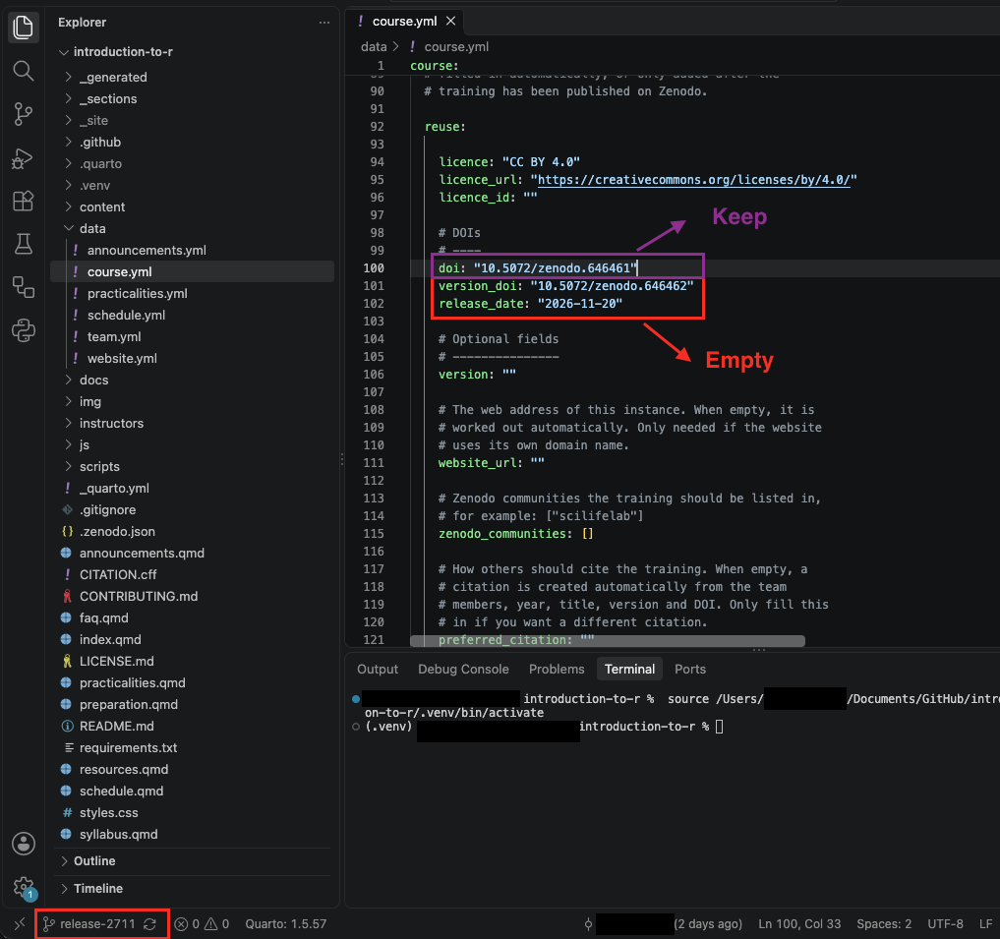
- Keep
Check the rest of the FAIR information for this training instance, as described in FAIRification: your part. The team often changes between training instances, so check the authors and their ORCIDs in
data/team.ymlin particular.Save, commit and push your changes.
Don’t change anything on the branches of your earlier training instances. Their DOIs stay as they are, so the earlier releases can still be found and cited.
Publish the new training instance
Your new training instance is now ready to publish. Zenodo is already connected to your repository, so you can skip the first two steps of Publish on Zenodo.
Create a release on GitHub, as described in step 3 of Publish on Zenodo. Choose the branch of your new training instance as the target, and give the release a new tag, for example
v2711.Check the release on Zenodo, as described in step 4. Zenodo adds it as a new version of your training, at the top of the list in the Versions box.
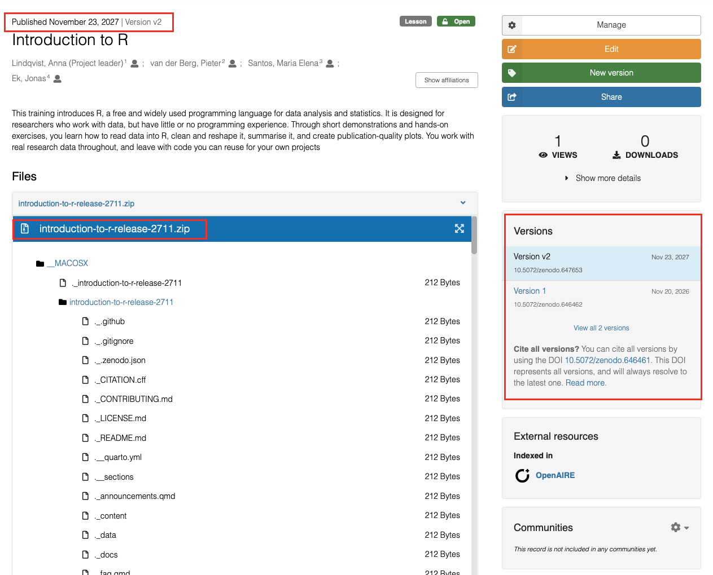
Add the DOI of this version and the release date to
data/course.ymlon the branch of your new training instance, as described in step 5. Keep the DOI of all versions as it is.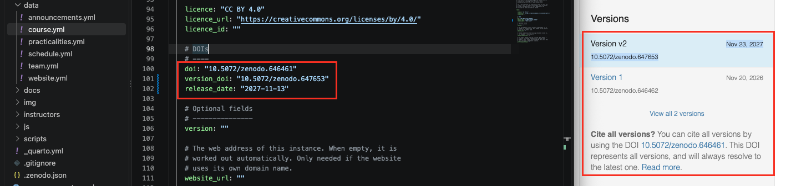